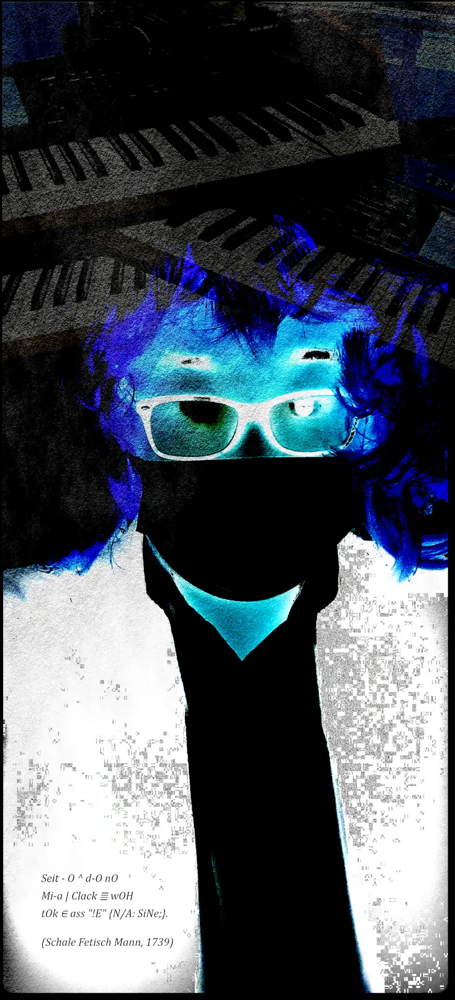
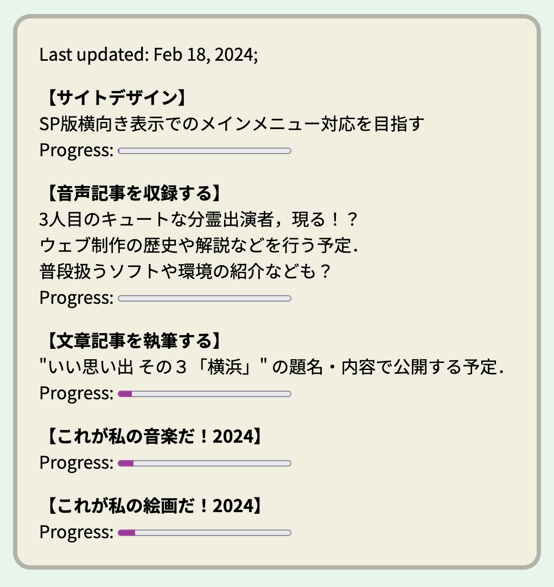
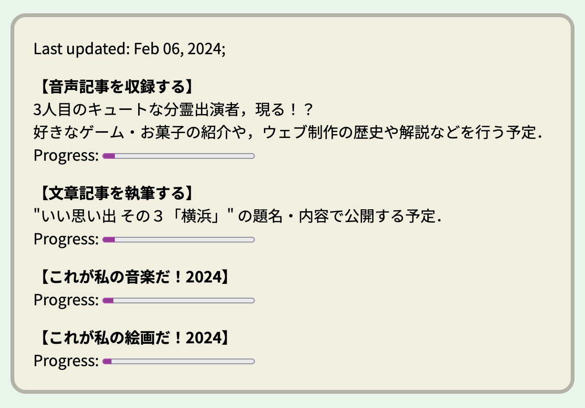
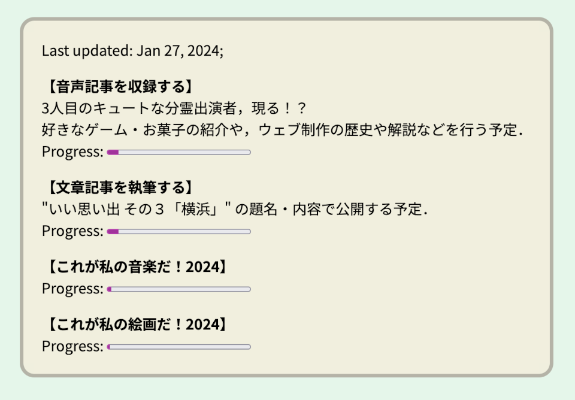
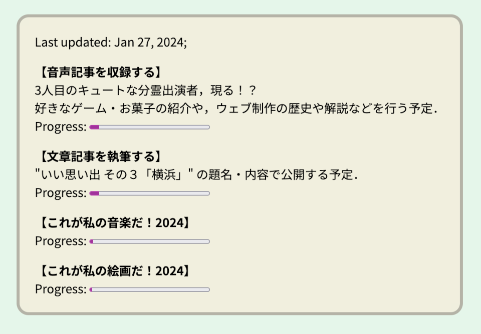

Other Contents
"その他のコンテンツ群"
非常に枠を逸脱してしまっている作品並びに情報たちが詰まった宝の山ゾーンであります．
ファンシィ・エレベータ, Mar_08_2024 (Miyatake Lab, 2024)
【ノスタルジア】壊れかけのファンタジィ【狂おしの10代】
幻想的でふわふわとした曲調で，昔の風景が夢の中のような映像とともに浮かび上がる！ワンダフル・アポクリン！
研究室の秘密のビデオ, Mar_01_2024 (Miyatake Lab, 2024)
【謎の人物たち，フェチっと参上！】これは名言なのか，迷言なのか，はたまた...！
Google Drive ストレージを参照しており，下記のリンクから再生できると思います．
ファイル再生について:
Google LLC https://www.google.com/ のクラウドストレージサービス，Google Drive に保存されているファイルを参照しています．
サイトにお越しの皆さまに鑑賞いただくことを目的として，誰でも閲覧可能な状態に設定してあります．
当サイト利用者さまがファイルを再生してお楽しみいただく以外の，たとえばローカルへの保存などの行為はお控えくださいますよう，お願い申し上げます．
参考画像:

淨樂絵画コレクション ２０２３春 (Miyatake Lab, 2023)
私がアナローグな絵画作品制作に没頭していた 2023 年 春の代表作 4 作品 (6 バージョン) をまとめた集大成ビデオになります．
Google Drive ストレージを参照しており，下記のリンクから再生できると思います．適宜お手持ちのアカウントにログインしてからご覧ください．
ファイル再生について:
Google LLC https://www.google.com/ のクラウドストレージサービス，Google Drive に保存されているファイルを参照しています．
サイトにお越しの皆さまに鑑賞いただくことを目的として，誰でも閲覧可能な状態に設定してあります．
当サイト利用者さまがファイルを再生してお楽しみいただく以外の，たとえばローカルへの保存などの行為はお控えくださいますよう，お願い申し上げます．
The Three Videos (Miyatake Lab, 2022 ∧ SYS.T.Miyatake, 2024)
私が映像作品制作に集中していた 2022 年の代表作 3 作品をまとめた集大成ビデオになります．
Google Drive ストレージを参照しており，下記のリンクから再生できると思います．適宜お手持ちのアカウントにログインしてからご覧ください．
ファイル再生について:
Google LLC https://www.google.com/ のクラウドストレージサービス，Google Drive に保存されているファイルを参照しています．
サイトにお越しの皆さまに鑑賞いただくことを目的として，誰でも閲覧可能な状態に設定してあります．
当サイト利用者さまがファイルを再生してお楽しみいただく以外の，たとえばローカルへの保存などの行為はお控えくださいますよう，お願い申し上げます．
参考フレーム画像 (部分・編集済・題目風味がします):
宝物置き場 (デモテープ)
以下全作品の制作・著作: Sys. T. Miyatake, 2024
なかよしすぎない！？まぢで。
2024年2月26日制作デモ『オレたちのハンカチーフ (回転する景観)』
いえぁ！！！匂ってるかーい！！！
【ご注意！】口中に牛乳などを含みながら再生しないでください！
レトロなサウンド，ファニィにトキメク出演者たち，幼少の頃を彷彿とさせる，はっちゃけたお祭りパーティの予感...！
制作中コンセプトアルバム『詩集廟・潤う思想』より
2024年2月20日公開デモ『シーソーの雨露 (詩集廟の設計者)』
液の囁き，垂れて落ちて溜まって沁み入る無音の叫び...
すっぽんぽん！？
2024年2月20日制作デモ『ぽっこりのうた (回転する景観)』
『痩せよう！のうた』に対抗するのは，このソング〜！いっしょに踊ろう！ぽっこりとな！
魂の応援
2024年2月16日公開デモ『応援団 (回転する景観)』
応援が欲しくなりました！
ワキガ磁石
2024年2月8日制作デモ『稚苦悩のアウラ (回転する景観)』
全身サワークリームまみれでしょうか...？これこそが，回転する景観ファンタジー．
悪夢のメロディ再現
2024年1月29日制作デモ『幼少期の悪夢だけで流れ続けていた伝説的な愛のメロディを再現しましょうか (SYS. T. Miyatake)』
大好きです．ご感想お待ちしております．
WIP 履歴
サイトトップページに配置しているWIP (work in progress) ，つまり進行中のプロセスの進捗ステータスと，その具体的な案を掲載している枠の過去の履歴を残しています．
 
